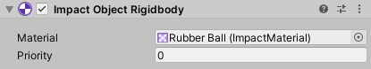
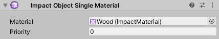
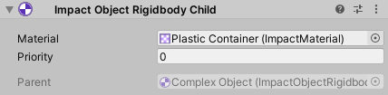

Impact Objects
Impact Objects are components that you attach to the objects in your game’s world to specify their material, so that other objects (and other parts of your game) know how to interact with them. Impact Objects can also provide physics data such as rigidbody velocity.
Most Impact Objects have the same 2 properties:
- Material – The Impact Material used by the object.
- Priority – Impact uses object pools for its Audio, Particle, and Decal interactions. So, there may be times where an object needs to, for example, play a collision sound, but all of the audio sources in the pool are currently being used. Priority can be used to ensure that certain objects will always play their interactions, even if it requires "stealing" resources that are already in use.
Impact Object Single Material
Impact Object Single Material is the simplest type of Impact Object, with a single material used for the object. It is most suited for static objects and level geometry. You can add this script to your objects by going to .
Impact Object Rigidbody
Impact Object Rigidbody is an Impact Object used for objects that have a Rigidbody or Rigidbody2D. You can add this script to your objects by going to .
Rigidbodies with Multiple Materials
It is possible to have a Rigidbody with children that have different materials by using an Impact Object Rigidbody with Impact Object Rigidbody Child components.
To add an Impact Object Rigidbody Child, go to and assign the Impact Material and Priority as you would with the normal Impact Object Rigidbody. If you have already added a Impact Object Rigidbody to the root of the object, you will see it in the Parent field.
Once you have added Impact Object Rigidbody Child components, the root Impact Object Rigidbody will show a list of all of its children.
Any Impact Triggers must be on the root of the object (the same object as the Rigidbody), and should have their Impact Object field empty. Impact Triggers must be on the same component as the Rigidbody, otherwise they will not recieve collision messages. When the Impact Object is not set, the trigger will attempt to find the first Impact Object on the collider that was hit or on one of its parent objects.
Impact Object Rigidbody (Cheap)
Sometimes you may have a lot of objects in your scene and need to make sure performance stays acceptable. Impact Object Rigidbody uses FixedUpdate to ensure accurate interactions, especially when sliding and rolling. However, this can cause overhead if there are a lot of objects.
If high accuracy is not needed, then you can use Impact Object Rigidbody (Cheap) instead. This version does not use FixedUpdate and so does not incur the same overhead as the normal Impact Object Rigidbody.
Note that if using multiple materials as described in the previous section, you do not need to use Impact Object Rigidbody Child. You can simply add Impact Object Rigidbody (Cheap) components to all of your child objects.
Impact Terrain

Impact Terrain is a special Impact Object for handling Terrains. It allows you to specify a material for each terrain layer on your terrain. You can add this script to your terrain by going to .
The Refresh Terrain Layers button will manually re-sync the the data stored in the Impact Terrain script with the terrain’s layers.